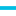

<!doctype html>
<html lang="en">
    <head>
        <meta charset="utf-8">
        <meta http-equiv="X-UA-Compatible" content="IE=edge">
        <meta name="viewport" content="initial-scale=1,user-scalable=no,maximum-scale=1,width=device-width">
        <meta name="mobile-web-app-capable" content="yes">
        <meta name="apple-mobile-web-app-capable" content="yes">
        <link rel="stylesheet" href="css/leaflet.css">
        <link rel="stylesheet" href="css/L.Control.Layers.Tree.css">
        <link rel="stylesheet" href="css/qgis2web.css">
        <link rel="stylesheet" href="css/fontawesome-all.min.css">
        <link rel="stylesheet" href="css/leaflet-control-geocoder.Geocoder.css">
        <style>
        html, body, #map {
            width: 100%;
            height: 100%;
            padding: 0;
            margin: 0;
        }
        </style>
        <title>NWL _ Interactive Map</title>
    </head>
    <body>
        <div id="map">
        </div>
        <script src="js/qgis2web_expressions.js"></script>
        <script src="js/leaflet.js"></script>
        <script src="js/L.Control.Layers.Tree.min.js"></script>
        <script src="js/leaflet.rotatedMarker.js"></script>
        <script src="js/leaflet.pattern.js"></script>
        <script src="js/leaflet-hash.js"></script>
        <script src="js/Autolinker.min.js"></script>
        <script src="js/rbush.min.js"></script>
        <script src="js/labelgun.min.js"></script>
        <script src="js/labels.js"></script>
        <script src="js/leaflet-control-geocoder.Geocoder.js"></script>
        <script src="data/B_Allendale_1.js"></script>
        <script src="data/Merged_Sewers_5_2.js"></script>
        <script src="data/Manholes_3.js"></script>
        <script>
        var highlightLayer;
        function highlightFeature(e) {
            highlightLayer = e.target;
            highlightLayer.openPopup();
        }
        var map = L.map('map', {
            zoomControl:false, maxZoom:28, minZoom:1
        })
        var hash = new L.Hash(map);
        map.attributionControl.setPrefix('<a href="https://github.com/tomchadwin/qgis2web" target="_blank">qgis2web</a> &middot; <a href="https://leafletjs.com" title="A JS library for interactive maps">Leaflet</a> &middot; <a href="https://qgis.org">QGIS</a>');
        var autolinker = new Autolinker({truncate: {length: 30, location: 'smart'}});
        // remove popup's row if "visible-with-data"
        function removeEmptyRowsFromPopupContent(content, feature) {
         var tempDiv = document.createElement('div');
         tempDiv.innerHTML = content;
         var rows = tempDiv.querySelectorAll('tr');
         for (var i = 0; i < rows.length; i++) {
             var td = rows[i].querySelector('td.visible-with-data');
             var key = td ? td.id : '';
             if (td && td.classList.contains('visible-with-data') && feature.properties[key] == null) {
                 rows[i].parentNode.removeChild(rows[i]);
             }
         }
         return tempDiv.innerHTML;
        }
        // add class to format popup if it contains media
		function addClassToPopupIfMedia(content, popup) {
			var tempDiv = document.createElement('div');
			tempDiv.innerHTML = content;
			if (tempDiv.querySelector('td img')) {
				popup._contentNode.classList.add('media');
					// Delay to force the redraw
					setTimeout(function() {
						popup.update();
					}, 10);
			} else {
				popup._contentNode.classList.remove('media');
			}
		}
        var title = new L.Control({'position':'bottomleft'});
        title.onAdd = function (map) {
            this._div = L.DomUtil.create('div', 'info');
            this.update();
            return this._div;
        };
        title.update = function () {
            this._div.innerHTML = '<h2>NWL _ Interactive Map</h2>';
        };
        title.addTo(map);
        var abstract = new L.Control({'position':'bottomleft'});
        abstract.onAdd = function (map) {
            this._div = L.DomUtil.create('div',
            'leaflet-control abstract');
            this._div.id = 'abstract'

                abstract.show();
                return this._div;
            };
            abstract.show = function () {
                this._div.classList.remove("abstract");
                this._div.classList.add("abstractUncollapsed");
                this._div.innerHTML = 'The map shows the RAG status for all NWL sites.';
        };
        abstract.addTo(map);
        var zoomControl = L.control.zoom({
            position: 'topleft'
        }).addTo(map);
        var bounds_group = new L.featureGroup([]);
        function setBounds() {
            if (bounds_group.getLayers().length) {
                map.fitBounds(bounds_group.getBounds());
            }
        }
        map.createPane('pane_GoogleSatellite_0');
        map.getPane('pane_GoogleSatellite_0').style.zIndex = 400;
        var layer_GoogleSatellite_0 = L.tileLayer('https://mt1.google.com/vt/lyrs=s&x={x}&y={y}&z={z}', {
            pane: 'pane_GoogleSatellite_0',
            opacity: 1.0,
            attribution: '<a href="https://www.google.at/permissions/geoguidelines/attr-guide.html">Map data ©2015 Google</a>',
            minZoom: 1,
            maxZoom: 28,
            minNativeZoom: 0,
            maxNativeZoom: 20
        });
        layer_GoogleSatellite_0;
        map.addLayer(layer_GoogleSatellite_0);
        function pop_B_Allendale_1(feature, layer) {
            layer.on({
                mouseout: function(e) {
                    if (typeof layer.closePopup == 'function') {
                        layer.closePopup();
                    } else {
                        layer.eachLayer(function(feature){
                            feature.closePopup()
                        });
                    }
                },
                mouseover: highlightFeature,
            });
            var popupContent = '<table>\
                    <tr>\
                        <td colspan="2">' + (feature.properties['id'] !== null ? autolinker.link(feature.properties['id'].toLocaleString()) : '') + '</td>\
                    </tr>\
                    <tr>\
                        <td colspan="2">' + (feature.properties['site'] !== null ? autolinker.link(feature.properties['site'].toLocaleString()) : '') + '</td>\
                    </tr>\
                </table>';
            var content = removeEmptyRowsFromPopupContent(popupContent, feature);
			layer.on('popupopen', function(e) {
				addClassToPopupIfMedia(content, e.popup);
			});
			layer.bindPopup(content, { maxHeight: 400 });
        }

        function style_B_Allendale_1_0() {
            return {
                pane: 'pane_B_Allendale_1',
                opacity: 1,
                color: 'rgba(35,35,35,0.0)',
                dashArray: '',
                lineCap: 'butt',
                lineJoin: 'miter',
                weight: 1.0, 
                fill: true,
                fillOpacity: 1,
                fillColor: 'rgba(178,223,113,0.3137254901960784)',
                interactive: true,
            }
        }
        map.createPane('pane_B_Allendale_1');
        map.getPane('pane_B_Allendale_1').style.zIndex = 401;
        map.getPane('pane_B_Allendale_1').style['mix-blend-mode'] = 'normal';
        var layer_B_Allendale_1 = new L.geoJson(json_B_Allendale_1, {
            attribution: '',
            interactive: true,
            dataVar: 'json_B_Allendale_1',
            layerName: 'layer_B_Allendale_1',
            pane: 'pane_B_Allendale_1',
            onEachFeature: pop_B_Allendale_1,
            style: style_B_Allendale_1_0,
        });
        bounds_group.addLayer(layer_B_Allendale_1);
        map.addLayer(layer_B_Allendale_1);
        function pop_Merged_Sewers_5_2(feature, layer) {
            layer.on({
                mouseout: function(e) {
                    if (typeof layer.closePopup == 'function') {
                        layer.closePopup();
                    } else {
                        layer.eachLayer(function(feature){
                            feature.closePopup()
                        });
                    }
                },
                mouseover: highlightFeature,
            });
            var popupContent = '<table>\
                    <tr>\
                        <th scope="row">Site</th>\
                        <td class="visible-with-data" id="Site">' + (feature.properties['Site'] !== null ? autolinker.link(feature.properties['Site'].toLocaleString()) : '') + '</td>\
                    </tr>\
                    <tr>\
                        <th scope="row">GIS ID</th>\
                        <td class="visible-with-data" id="GIS ID">' + (feature.properties['GIS ID'] !== null ? autolinker.link(feature.properties['GIS ID'].toLocaleString()) : '') + '</td>\
                    </tr>\
                    <tr>\
                        <th scope="row">Status</th>\
                        <td class="visible-with-data" id="Status">' + (feature.properties['Status'] !== null ? autolinker.link(feature.properties['Status'].toLocaleString()) : '') + '</td>\
                    </tr>\
                    <tr>\
                        <th scope="row">RAG</th>\
                        <td class="visible-with-data" id="RAG">' + (feature.properties['RAG'] !== null ? autolinker.link(feature.properties['RAG'].toLocaleString()) : '') + '</td>\
                    </tr>\
                    <tr>\
                        <th scope="row">Reason</th>\
                        <td class="visible-with-data" id="Reason">' + (feature.properties['Reason'] !== null ? autolinker.link(feature.properties['Reason'].toLocaleString()) : '') + '</td>\
                    </tr>\
                </table>';
            var content = removeEmptyRowsFromPopupContent(popupContent, feature);
			layer.on('popupopen', function(e) {
				addClassToPopupIfMedia(content, e.popup);
			});
			layer.bindPopup(content, { maxHeight: 400 });
        }

        function style_Merged_Sewers_5_2_0(feature) {
            switch(String(feature.properties['RAG'])) {
                case 'Amber':
                    return {
                pane: 'pane_Merged_Sewers_5_2',
                opacity: 1,
                color: 'rgba(245,136,27,1.0)',
                dashArray: '',
                lineCap: 'square',
                lineJoin: 'bevel',
                weight: 4.0,
                fillOpacity: 0,
                interactive: true,
            }
                    break;
                case 'Green':
                    return {
                pane: 'pane_Merged_Sewers_5_2',
                opacity: 1,
                color: 'rgba(51,160,44,1.0)',
                dashArray: '',
                lineCap: 'square',
                lineJoin: 'bevel',
                weight: 4.0,
                fillOpacity: 0,
                interactive: true,
            }
                    break;
                case 'No info':
                    return {
                pane: 'pane_Merged_Sewers_5_2',
                opacity: 1,
                color: 'rgba(1,189,227,1.0)',
                dashArray: '',
                lineCap: 'square',
                lineJoin: 'bevel',
                weight: 4.0,
                fillOpacity: 0,
                interactive: true,
            }
                    break;
                case 'Not Surveyed':
                    return {
                pane: 'pane_Merged_Sewers_5_2',
                opacity: 1,
                color: 'rgba(206,44,198,1.0)',
                dashArray: '',
                lineCap: 'square',
                lineJoin: 'bevel',
                weight: 4.0,
                fillOpacity: 0,
                interactive: true,
            }
                    break;
                case 'Red':
                    return {
                pane: 'pane_Merged_Sewers_5_2',
                opacity: 1,
                color: 'rgba(227,26,28,1.0)',
                dashArray: '',
                lineCap: 'square',
                lineJoin: 'bevel',
                weight: 4.0,
                fillOpacity: 0,
                interactive: true,
            }
                    break;
            }
        }
        map.createPane('pane_Merged_Sewers_5_2');
        map.getPane('pane_Merged_Sewers_5_2').style.zIndex = 402;
        map.getPane('pane_Merged_Sewers_5_2').style['mix-blend-mode'] = 'normal';
        var layer_Merged_Sewers_5_2 = new L.geoJson(json_Merged_Sewers_5_2, {
            attribution: '',
            interactive: true,
            dataVar: 'json_Merged_Sewers_5_2',
            layerName: 'layer_Merged_Sewers_5_2',
            pane: 'pane_Merged_Sewers_5_2',
            onEachFeature: pop_Merged_Sewers_5_2,
            style: style_Merged_Sewers_5_2_0,
        });
        bounds_group.addLayer(layer_Merged_Sewers_5_2);
        map.addLayer(layer_Merged_Sewers_5_2);
        function pop_Manholes_3(feature, layer) {
            layer.on({
                mouseout: function(e) {
                    if (typeof layer.closePopup == 'function') {
                        layer.closePopup();
                    } else {
                        layer.eachLayer(function(feature){
                            feature.closePopup()
                        });
                    }
                },
                mouseover: highlightFeature,
            });
            var popupContent = '<table>\
                    <tr>\
                        <th scope="row">Name</th>\
                        <td class="visible-with-data" id="Name">' + (feature.properties['Name'] !== null ? autolinker.link(feature.properties['Name'].toLocaleString()) : '') + '</td>\
                    </tr>\
                </table>';
            var content = removeEmptyRowsFromPopupContent(popupContent, feature);
			layer.on('popupopen', function(e) {
				addClassToPopupIfMedia(content, e.popup);
			});
			layer.bindPopup(content, { maxHeight: 400 });
        }

        function style_Manholes_3_0() {
            return {
                pane: 'pane_Manholes_3',
                radius: 2.4,
                opacity: 1,
                color: 'rgba(35,35,35,1.0)',
                dashArray: '',
                lineCap: 'butt',
                lineJoin: 'miter',
                weight: 1,
                fill: true,
                fillOpacity: 1,
                fillColor: 'rgba(255,225,1,1.0)',
                interactive: true,
            }
        }
        map.createPane('pane_Manholes_3');
        map.getPane('pane_Manholes_3').style.zIndex = 403;
        map.getPane('pane_Manholes_3').style['mix-blend-mode'] = 'normal';
        var layer_Manholes_3 = new L.geoJson(json_Manholes_3, {
            attribution: '',
            interactive: true,
            dataVar: 'json_Manholes_3',
            layerName: 'layer_Manholes_3',
            pane: 'pane_Manholes_3',
            onEachFeature: pop_Manholes_3,
            pointToLayer: function (feature, latlng) {
                var context = {
                    feature: feature,
                    variables: {}
                };
                return L.circleMarker(latlng, style_Manholes_3_0(feature));
            },
        });
        bounds_group.addLayer(layer_Manholes_3);
        map.addLayer(layer_Manholes_3);
        var osmGeocoder = new L.Control.Geocoder({
            collapsed: true,
            position: 'topleft',
            text: 'Search',
            title: 'Testing'
        }).addTo(map);
        document.getElementsByClassName('leaflet-control-geocoder-icon')[0]
        .className += ' fa fa-search';
        document.getElementsByClassName('leaflet-control-geocoder-icon')[0]
        .title += 'Search for a place';
        var baseMaps = {};
        var overlaysTree = [
            {label: ' Manholes', layer: layer_Manholes_3},
            {label: 'Merged_Sewers_5<br /><table><tr><td style="text-align: center;"></td><td>Amber</td></tr><tr><td style="text-align: center;"></td><td>Green</td></tr><tr><td style="text-align: center;"></td><td>No info</td></tr><tr><td style="text-align: center;"></td><td>Not Surveyed</td></tr><tr><td style="text-align: center;"></td><td>Red</td></tr></table>', layer: layer_Merged_Sewers_5_2},
            {label: ' B_Allendale', layer: layer_B_Allendale_1},
            {label: "Google Satellite", layer: layer_GoogleSatellite_0},]
        var lay = L.control.layers.tree(null, overlaysTree,{
            //namedToggle: true,
            //selectorBack: false,
            //closedSymbol: '&#8862; &#x1f5c0;',
            //openedSymbol: '&#8863; &#x1f5c1;',
            //collapseAll: 'Collapse all',
            //expandAll: 'Expand all',
            collapsed: true,
        });
        lay.addTo(map);
        map.on("zoomend", function(){

                if (map.hasLayer(layer_Manholes_3)) {
                    if (map.getZoom() <= 16 && map.getZoom() >= 17) {
                        layer_Manholes_3.eachLayer(function (layer) {
                            layer.openTooltip();
                        });
                    } else {
                        layer_Manholes_3.eachLayer(function (layer) {
                            layer.closeTooltip();
                        });
                    }
                }
        });
        setBounds();
                if (map.hasLayer(layer_Manholes_3)) {
                    if (map.getZoom() <= 16 && map.getZoom() >= 17) {
                        layer_Manholes_3.eachLayer(function (layer) {
                            layer.openTooltip();
                        });
                    } else {
                        layer_Manholes_3.eachLayer(function (layer) {
                            layer.closeTooltip();
                        });
                    }
                }
        resetLabels([layer_Merged_Sewers_5_2,layer_Manholes_3]);
        map.on("zoomend", function(){
            resetLabels([layer_Merged_Sewers_5_2,layer_Manholes_3]);
        });
        map.on("layeradd", function(){
            resetLabels([layer_Merged_Sewers_5_2,layer_Manholes_3]);
        });
        map.on("layerremove", function(){
            resetLabels([layer_Merged_Sewers_5_2,layer_Manholes_3]);
        });
        </script>
    </body>
</html>
